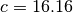
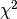
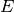
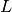
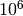
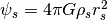
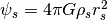
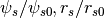
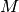

oPDF tutorial¶
oPDF is a code for modelling the phase space distribution of
steady-state tracers in spherical potentials. For more information,
check the website.
Please consult the science paper(http://arxiv.org/abs/1507.00769) on how it works.
You can use this tutorial interactively in ipython notebook by running
ipython notebook --pylab=inline
from the root directory of the oPDF code. This will open your browser,
and you can click tutorial.ipynb in the opened webpage. If that does
not work, then simply continue reading this document as a webpage. For
the full API documentation, check
here.
Getting Started¶
prerequisites¶
The oPDF code depends on the following libraries:
- C libraries
- Python libraries
- numpy, scipy, matplotlib
- iminuit (optional, only
needed if you want to do NFW-likelihood fit to the density profile
of dark matter. If you don’t have it, you need to comment out the
iminuitrelated imports in the header of oPDF.py.)
You can customize the makefile to specify how to compile and link
against the GSL and HDF5 libraries, by specifying the
GSLINC,GSLLIB,HDFINC,HDFLIB flags.
Build the library¶
under the root directory of the code, run
make
This will generate the library liboPDF.so, the backend of the python
module. Now you are all set up for the analysis. Open your python shell
in the code directory, and get ready for the modelling. If you want to
get rid of all the *.o files, you can clean them by
make clean
Set PYTHONPATH¶
From now on, you should either work under the current directory, or have
added the oPDF path to your PYTHONPATH before using oPDF in
python. To add the path, do
export PYTHONPATH=$PYTHONPATH:$OPDF_DIR
in bash, or the following in csh:
setenv PYTHONPATH ${PYTHONPATH}:$OPDF_DIR
. Replace $OPDF_DIR with the actual root directory of the oPDF
code above.
Prepare the data files¶
The data files are hdf5 files listing the physical positions and velocities of tracer particles, relative to the position and velocity of the center of the halo. The code comes with a sample file under data/:
- mockhalo.hdf5, a mock stellar halo. The potential is NFW with , , following the definition.
Compulsory datasets in a data file:
x, shape=[nx3], datatype=float32. The position of each particle.v, shape=[nx3], datatyep=float32. The velocity of each particle.
Optional datasets:
PartMass, [nx1] or 1, float32. This is the mass of particles. Assuming 1 if not specified.SubID, [nx1], int32. This is the subhalo id of each particle, for examination of the effects of subhaloes during the analysis.HaloID, [nx1], int32. This is the host halo id of each particles.
The default system of units are for Mass, Length and Velocity. If the units in the data differ from this system, you can choose to either update the data so that they follows the default systems, or change the system of units of oPDF code at run time. See the units section of this tutorial.
Note: to construct a tracer sample for a halo, do not use FoF particles alone. Instead, make a spherical selection by including all the particles inside a given radius. These will include FoF particles, background particles, and particles from other FoFs. FoF selection should be avoided because it is an arbitrary linking of particles according to their separations, but not dynamics.
A simple example: Fit the mock halo with RBinLike¶
Load the data¶
Let’s import the module first
from oPDF import *
Now the oPDFdir should have been automatically set to the directory
of the oPDF code. Let’s load the sample data
datafile=oPDFdir+"/data/mockhalo.hdf5"
FullSample=Tracer(datafile)
Sample=FullSample.copy(0,1000)
This will load the data into FullSample, and make a subsample of 1000 particles from the FullSample (starting from particle 0 in FullSample). You may want to do your analysis with the full sample. We extract the subsample just for illustrution purpose, to speed up the calculation in this tutorial.
Perform the fitting.¶
Now let’s fit the data with the radial binned likelihood estimator with 10 logarithmic radial bins.
Estimators.RBinLike.nbin=10
x,fval,status=Sample.dyn_fit(Estimators.RBinLike)
print x,fval,status
[ 100.43937117 26.62967127] 5020.3693017 1
In one or two minutes, you will get the results above, where
xis the best-fitting parametersfvalis the maximum log-likelihood valuestatus=1 means fitting is successful, =0 means fit failed.
That’s it! You have got the best-fitting and . ### Estimate significances How does that compare to the real parameters of , ? Not too bad, but let’s check the likelihood ratio of the two models
x0=[133.96,16.16]
f0=Sample.likelihood(x0, Estimators.RBinLike)
likerat=2*(fval-f0)
print likerat
2.78983807112
So we got a likelihood ratio of 2.79. How significant is that? According to Wilks’s theorem, if the data follows the null model (with the real parameters), then the likelihood ratio between the best-fit and the null would follow a  distribution. Since we have two free parameters, we should compare our likelihood ratio to a distribution. We can obtain the pval from the survival function of a distribution, and convert that to a Guassian significance level. This is automatically done by the Chi2Sig() utility function
from myutils import Chi2Sig
significance=Chi2Sig(likerat, dof=2)
print significance
1.15557973053
So the best-fitting differs from the real parameters by . It seems we are not very lucky and the fit is only marginally consistent with the real parameters, but still acceptable.
Confidence Contour¶
Following the same philosophy for the significance levels, we can start
to define confidence contours formed by points that differ from the
best-fitting parameters by a given significance level. This is done by
scanning a likelihood surface and then converting it to a significance
surface. For example, below we scan  grids around the
best-fitting parameters
grids around the
best-fitting parameters x, inside a box spanning from
log10(x)-dx to log10(x)+dx in each dimension. For the confidence
levels of RBinLike, we can provide the maximum likelihood value that we
obtained above, to save the function from searching for maxlike itself.
Be prepared that the scan can be slow.
m,c,sig,like=Sample.scan_confidence(Estimators.RBinLike, x, ngrids=[20,20], dx=[0.5,0.5], logscale=True, maxlike=fval)
The returned m,c are the grids (1-d vectors) of the scan, and
sig,like are the significance levels and likelihood values on the
grids (2-d array). Now let’s plot them in units of the real parameter
values:
plt.contour(m/x0[0],c/x0[1],sig,levels=[1,2,3]) #1,2,3sigma contours.
plt.plot(x[0]/x0[0],x[1]/x0[1],'ro') #the best-fitting
plt.plot(plt.xlim(),[1,1], 'k--', [1,1], plt.ylim(), 'k--')# the real parameters
plt.loglog()
plt.xlabel(r'$M/M_0$')
plt.ylabel(r'$c/c_0$')
<matplotlib.text.Text at 0x4585bd0>
Phase Images¶
How does the data look in space? We can create
images showing the distribution of particles in these coordinates. These
images give a direct visualization of how uniformly the tracer are
distributed along  -direction, on different ()
orbits. They are quite useful for spotting deviations from
steady-stateness in particular regions in phase space, for example, to
examine local deviations caused by subhaloes.
-direction, on different ()
orbits. They are quite useful for spotting deviations from
steady-stateness in particular regions in phase space, for example, to
examine local deviations caused by subhaloes.
To avoid having too few particles in each pixel we will start by drawing
a larger sample as NewSample, and then plot the images adopting the real
potential with parameters x0.
NewSample=FullSample.copy(0,20000)
plt.figure(figsize=(12,5))
plt.subplot(1,2,1)
NewSample.phase_image(x0, proxy='E')
plt.title('Real Potential')
plt.subplot(1,2,2)
NewSample.phase_image(x0, proxy='L')
plt.title('Real Potential')
<matplotlib.text.Text at 0x4d04b50>
We can see that the particle distribution is indeed uniform (roughly
given the current resolution) along the -direction,
irrespective of the energy and angular momentum.
TS profiles¶
If you want a more quantitative view of how much deviation there is at
each ,  or even  , you can plot the mean phase
deviation or AD distance (Test Statistics, or TS) inside different
bins.
, you can plot the mean phase
deviation or AD distance (Test Statistics, or TS) inside different
bins.
plt.figure(figsize=(15,5))
for i,proxy in enumerate('rEL'):
plt.subplot(1,3,i+1)
NewSample.plot_TSprof(x0, proxy, nbin=30)
plt.plot(plt.xlim(), [0,0], 'k--')
See, the mean phase deviations are within 3\sigma almost everywhere. Note that the raw mean phase is a standard normal variable if the tracer is in steady-state under the potential.
Reconstructing the mass profile with Phase-Mark method¶
The phase-mark method can reconstruct the mass profile non-parametrically. The reconstructed profile is typically noisier than that from parametric fitting, but it’s non-parametric. Now we demonstrate how this can be done. First let’s create some radial bins. A natural choice is to create bins with equal sample size,
xbin=Sample.gen_bin('r', nbin=5, equalcount=True)
This generates a sequence containing the edges of 3 (nbin=3) radial
bins. The “phase marks”, i.e., the characteristic mass point in each bin
can be found with the phase_mass_bin function:
marks=np.array([Sample.phase_mass_bin(xbin[[i,i+1]]) for i in xrange(len(xbin)-1)])
print marks
[[ 2.57914729 1.00683005 0.49058258 1.36649516 1. 1.
1. ]
[ 10.7295808 34.19465065 23.87852203 41.14360851 1. 1.
1. ]
[ 20.34998195 11.30505188 2.16321596 32.20870383 1. 1.
1. ]
[ 33.25517089 44.79736911 29.35628579 66.65986211 1. 1.
1. ]
[ 64.34329628 68.22149098 60.10142383 77.56745713 1. 1.
1. ]]
The marks is now a [nbin, 6] array, where each row contains one
characteristic mass point. The columns are
[r,m,ml,mu,flag,flagl, flagu], where r and m give the
characteristic radius and characteristic halo mass; ml and mu
give the lower and upper bound on m; flag, flagl,flagu
are convergence flags indicating whether the method has converged when
solving for m,ml and mu respectively (0:no; 1:yes; 2: no
solution to the phase equation, but closest point found). The points we
can trust must at least have flag=1. If one wants robust error
estimates, then flagl=1 and flagu=1 is also required. All our
data points have flag==1, meaning the fits are all successful, so we do
not need to worry about this below.
We can also fit a functional form to the phase marks. We use the
curve_fit function from the scipy.optimize package to do the fit
(need scipy version >0.15.1 in order to use absolute_sigma=1
in curve_fit). We will use the average of the upper and lower
errors, but this is not essential.
halofit=Halo(HaloTypes.NFWMC)
def halomass(r, m,c):
halofit.set_param([m,c])
return halofit.mass(r)
from scipy.optimize import curve_fit
err1=marks[:,3]-marks[:,1]
err2=marks[:,1]-marks[:,2]
err=(err1+err2)/2
par,Cov=curve_fit(halomass, marks[:,0], marks[:,1], sigma=err, p0=[100, 10], absolute_sigma=1)
print 'Fitted parameters:', par
print 'Parameter Errors:', np.sqrt(np.diagonal(Cov))
Fitted parameters: [ 123.24507653 14.92927574]
Parameter Errors: [ 24.43777446 4.36420908]
The fitted parameters make sense. Now let’s plot the marks, the fit to marks, and compare to the true mass profile:
fig=plt.figure()
plt.errorbar(marks[:,0], marks[:,1], yerr=[err2, err1], fmt='ro', label='Mark')
r=np.logspace(0,2,10)
plt.plot(r, halomass(r, par[0], par[1]), 'r-', label='Mark Fit')
#true mass profile:
halo=Halo()
halo.set_param(x0) #x0 are the true parameters
plt.plot(r, halo.mass(r), 'k-', label='True')
plt.legend(loc=4)
plt.xscale('log')
plt.yscale('log')
plt.xlabel('r')
plt.ylabel('M(<r)')
<matplotlib.text.Text at 0x5217250>
If one is more interested in fitting parametric functions to the reconstructed profiles, then we recommend to use only 2 radial bins. Adopting more radial bins lead to finer reconstruction of the profile, but also leaks some information so the final fit to the marks can be less accurate. We provide a compact function to combine the steps for fitting phase marks into a single step. For example, to fit with two bins, do
par2,Cov2,marks2=Sample.phase_mark_fit(par0=[100,10], nbin=2)
print 'mark flags:\n', marks2[:,4:]
print 'Fitted parameters:', par2
print 'Parameter Errors:', np.sqrt(np.diagonal(Cov2))
mark flags:
[[ 1. 1. 1.]
[ 1. 1. 1.]]
Fitted parameters: [ 124.0093333 19.67968255]
Parameter Errors: [ 16.39555491 3.99462691]
As you can see, now the parameter errors are smaller. The functional
form of the profile used in the fitting is controlled by the current
Sample.halo. To use a disired profile, set the halo type before
fitting. For example,
Sample.halo.set_type(HaloTypes.NFWMC, scales=[1,1])
To plot the fit,
fig=plt.figure()
plt.errorbar(marks2[:,0], marks2[:,1], yerr=[marks2[:,1]-marks2[:,2], marks2[:,3]-marks2[:,1]], fmt='ro', label='Mark')
Sample.halo.set_param(par2)
plt.plot(r, Sample.halo.mass(r), 'r-', label='Mark Fit')
plt.plot(r, halo.mass(r), 'k-', label='True')
plt.legend(loc=4)
plt.xscale('log')
plt.yscale('log')
plt.xlabel('r')
plt.ylabel('M(<r)')
<matplotlib.text.Text at 0x45946d0>
Customizing the analysis¶
Estimators¶
There are several predefined estimators to choose from when you need an
estimator as a parameter. These are listed as members of Estimators.
In most cases, you can freely choose from the following when an
estimator is required.
- Estimators.RBinLike
- Estimators.AD
- Estimators.MeanPhase
- Estimators.MeanPhaseRaw (same as MeanPhase but returns the un-squared mean phase deviation, so it is a standard normal variable instead of a chi-square for MeanPhase).
For RBinLike, you can also customize the number of radial bins and whether to bin in linear or log scales. For example, the following will change the RBinLike to use 20 linear bins.
Estimators.RBinLike.nbin=20
Estimators.RBinLike.logscale=False
You can then pass this customized Estimators.RBinLike to your
likelihood functions. Since the purpose of the binning is purely to
suppress shot noise, a larger number of bins is generally better, as
long as it is not too noisy. On the other hand, when the likelihood
contours appear too irregular, one should try reducing the number of
radial bins to ensure the irregularities are not caused by shot noise.
In our analysis, we have adopted 30 logarithmic bins for an ideal sample
of 1000 particles, and 50 bins for  particles in a realistic
halo, although a bin number as low as 5 could still work.
units¶
The system of units is specified in three fundamental units:
Mass[], Length[kpc/ ], Velocity[km/s]. You
can query the current units with
], Velocity[km/s]. You
can query the current units with
Globals.get_units()
Mass : 10000000000.0 Msun/h
Length: 1.0 kpc/h
Vel : 1.0 km/s
(10000000000.0, 1.0, 1.0)
The default units are [, kpc/,
km/s]. The oPDF code does not need to know the value of the hubble
constant , as long as the units are correctly specified. It is
the user’s responsibility to make sure that his/her units are consistent
with his assumed hubble parameter.
If you want to change the system of units, you must do it immediately
after importing the oPDF module, to avoid inconsistency with units
of previously loaded tracers. For example, if your data is provided in
units of (1e10Msun, kpc, km/s), and you adopt  in your
model, then you can set the units like below
in your
model, then you can set the units like below
from oPDF import *
h=0.73
Globals.set_units(1e10*h,h,1)
That is, to set them to ( Msun/,
kpc/, km/s).
The user should only use Globals.set_units() to change the units, which automatically updates several interal constants related to units. Never try to change the internal unit variables (e.g., Globals.units.MassInMsunh) manually.
cosmology¶
The cosmology parameters (, )can be accessed through
print Globals.cosmology.OmegaM0, Globals.cosmology.OmegaL0
0.3 0.7
To change the cosmology to (0.25, 0.75), simply do
Globals.cosmology.OmegaM0=0.25
Globals.cosmology.OmegaL0=0.75
Again this is advised to be done in the beginning, to avoid inconsistency in the calculations.
parametrization of the potential¶
The default parameterization of the potential is a NFW potential with
mass and concentration parameters. You can change the parametrization of
the halo associated with your tracer. For example, if you want to fit
for  instead of (), then
instead of (), then
Sample.halo.set_type(halotype=HaloTypes.NFWRhosRs)
Available types are listed as members of the HaloTypes objects,
including:
- HaloTypes.NFWMC: NFW halo parametrized by

- HaloTypes.NFWRhosRs: NFW,
- HaloTypes.NFWPotsRs: NFW, (
 ), with
.
), with
. - HaloTypes.CorePotsRs: Cored Generalized NFW Potential (inner density slope=0), parametrized by ()
- HaloTypes.CoreRhosRs: Cored GNFW,
- HaloTypes.TMPMC: Template profile, parametrization
- HaloTypes.TMPPotScaleRScale: Template, 
To use template profiles, you have to create them first, in the form of
() arrays and the real  parameter to
be added to C/TemplateData.h. You need to recompile the C library once
this is done. PotentialProf.py can help you in generating the templates
from DM distributions.
parameter to
be added to C/TemplateData.h. You need to recompile the C library once
this is done. PotentialProf.py can help you in generating the templates
from DM distributions.
If you use template profiles, you also need to specify the template id, to tell the code which template in TemplateData.h to use. For example,
Sample.halo.set_type(halotype=HaloTypes.TMPPotScaleRScale, TMPid=5)
You can also change the virial definition and redshift of the halo, for example:
Sample.halo.set_type(virtype=VirTypes.B200, redshift=0.1)
When fitting for the potential, it is always a good choice to adjust the scales of parameters so that the numerical values of the parameters are of order 1. oPDF allows you to change the scale of the parameters. The physical values of the parameters will be the raw parameters times the scale of parameters. By default, the scales are all set to unity. We can change them as
Sample.halo.set_type(scales=[100,10])
Now if we fit the Sample again with the RBinLike estimator, instead of
x=[ 118.18 19.82], we will get x=[1.1818 1.982] as the
best fit, but the physical values are not changed.
Halos¶
Each tracer is associated with a halo. You can also work with a seperate halo object. There are several methods associated with a halo object. You can set_type(), set_param(), get the mass and potential profiles
halo=Halo(halotype=HaloTypes.NFWMC)
halo.set_param([180,15])
r=np.logspace(0,2,10)
plt.figure(figsize=(16,4))
plt.subplot(121)
plt.loglog(r, halo.mass(r))
plt.xlabel('r')
plt.ylabel('M(<r)')
plt.subplot(122)
plt.loglog(r, -halo.pot(r))
plt.xlabel('r')
plt.ylabel(r'$-\psi(r)$')
<matplotlib.text.Text at 0x570efd0>
selecting and cutting¶
The following line applies a radial cut from 1 to 100 in system unit. Note it not only selects particles to have , but also sets the radial boundary for the dynamical model, so that only dyanmical consistency inside the selected radial range is checked.
Sample.radial_cut(1,100)
This creates a subsample by selecting high angular momentum (L>1e4) particles:
SubSample=Sample.select(Sample.data['L']>1e4)
All the particle data can be accessed from the record array Sample.data.
You can do similar selections (and many other operations) on any
available fields of the data (except for radial selection). Have a look
at the datatype or Particle_t._fields_ to see the available fields
print Sample.data.dtype.names
('haloid', 'subid', 'flag', 'w', 'r', 'K', 'L2', 'L', 'x', 'v', 'E', 'T', 'vr', 'theta', 'rlim')
Note:
- The dynamical method tests the radial distribution, so one should
avoid distorting the radial distribution with any radial selection.
One can still apply radial cuts, but should only do this with the
Sample.radial_cut(rmin,rmax)function. - The
wfield is the particle mass in units of the average particle mass. The average particle mass isSample.mP. These are all ones if no particle mass is given in the datafile. - the
haloidandsubidfields are only filled if you haveSubIDandHaloIDdatasets in the datafile when loading. - The
E,thetaandrlimfields are the energy, phase-angle, and radial limits (peri and apo-center distances) of the orbits. These depend on the potential, and are only filled when you have done some calculation in a halo or have filled them explicitly with the set_phase() function, e.g.,
Sample.set_phase(x0)
print Sample.data['E'][10]
print Sample.data['theta'][35]
16450988.2168
0.809988602192
Extending the code¶
To add new types of potential:¶
- in C/halo.h: add your HaloType identifier in HaloType_t
- in C/halo.c:
- write your halo initializer in halo_set_param().
- write your potential function in halo_pot()
- optionally, write your cumulative mass profile in halo_mass(), and add any initilization in halo_set_type() if needed.
- in oPDF.py:
- add your newly defined halotype to the following line
HaloTypes=NamedEnum(...
- add your newly defined halotype to the following line
To add new template profiles:¶
- Generate your template in the form of ()
arrays, and append to
PotentialTemplateinC/TemplateData.h. - Append the scale radius of the new template to
TemplateScaleinC/TemplateData.h. This is only used if you want to useTMPMCparametrization. In this case the scale radius must be the radius with respect to which you define the concentration. That is, you must make sure when you input the real parameters to the template, and I convert from  and then compare to this scale radius, I get the real that you input.
that you input. - and are only needed if you want to use
TMPMCparametrization. If you only want to useTMPPotScaleRScaleparametrization, you can fill and with ones or any value.
To add new estimators:¶
- check
C/models.c.
You need to recompile the C library once this is done.
PotentialProf.py can help you in generating the templates from DM
distributions.
Additional Features¶
Parallel jobs¶
The C backend of oPDF is fully parallelized with OpenMP for parallel
computation on shared memory machines. To control the number of threads
used, for example to use 16 threads, set the environment variable
export OMP_NUM_THREADS=16
in bash or
setenv OMP_NUM_THREADS 16
in csh before running.
When submitting python scripts containing oPDF calculations to a
batch system on a server, try to submit to a shared memory node and
request more than one CPUs on the node to make use of the parallel
power.
Memory management¶
Each loaded tracer is associated with a memory block in C. If you are certain you no longer need the tracer, you can clean it to free up memory. For example,
NewSample.clean()
will clear our previously created NewSample. If you know you only need
the tracer for certain operations, you can automate the loading and
cleaning process by using with statement:
with Tracer(datafile) as TempSample:
NewSample=TempSample.copy(0,100)
This will load the datafile into TempSample, create NewSample
from TempSample, and clear TempSample when exiting the with
block.
Bootstrap sampling¶
To create bootstrap samples (sample with replacement), just sample with a different seed each time
BSSample=Sample.resample(seed=123)
NFW-likelihood¶
To fit a spatial distribution of particles to an NFW profile (e.g., fitting the distribution of dark matter particles in a halo)
Sample.NFW_fit()
******************************************************************
---------------------------------------------------------------------------------------
fval = 6431.376199877737 | nfcn = 85 | ncalls = 85
edm = 7.617539575663999e-07 (Goal: 5e-05) | up = 0.5
---------------------------------------------------------------------------------------
| Valid | Valid Param | Accurate Covar | Posdef | Made Posdef |
---------------------------------------------------------------------------------------
| True | True | True | True | False |
---------------------------------------------------------------------------------------
| Hesse Fail | Has Cov | Above EDM | | Reach calllim |
---------------------------------------------------------------------------------------
| False | True | False | '' | False |
---------------------------------------------------------------------------------------
----------------------------------------------------------------------------------------------
| | Name | Value | Para Err | Err- | Err+ | Limit- | Limit+ | |
----------------------------------------------------------------------------------------------
| 0 | m = 15.61 | 0.558 | | | | | |
| 1 | c = 22.71 | 2.325 | | | | | |
----------------------------------------------------------------------------------------------
******************************************************************
['m', 'c']
((1.0, -0.15685653025406016), (-0.15685653025406016, 1.0))
| 0 1
--------------------
m 0 | 1.00 -0.16
c 1 | -0.16 1.00
--------------------
(({'hesse_failed': False, 'has_reached_call_limit': False, 'has_accurate_covar': True, 'has_posdef_covar': True, 'up': 0.5, 'edm': 7.617539575663999e-07, 'is_valid': True, 'is_above_max_edm': False, 'has_covariance': True, 'has_made_posdef_covar': False, 'has_valid_parameters': True, 'fval': 6431.376199877737, 'nfcn': 85},
[{'is_const': False, 'name': 'm', 'has_limits': False, 'value': 15.611655846563332, 'number': 0L, 'has_lower_limit': False, 'upper_limit': 0.0, 'lower_limit': 0.0, 'has_upper_limit': False, 'error': 0.5579761861939552, 'is_fixed': False},
{'is_const': False, 'name': 'c', 'has_limits': False, 'value': 22.711151960080375, 'number': 1L, 'has_lower_limit': False, 'upper_limit': 0.0, 'lower_limit': 0.0, 'has_upper_limit': False, 'error': 2.325172837557389, 'is_fixed': False}]),
<iminuit._libiminuit.Minuit at 0x53f77b0>)
In order for this to make sense, Sample should be loaded with dark
matter particles of equal particle mass given in Sample.mP, and the
number density profile times Sample.mP should give the physical
density profile.
You also need the iminuit
python package before you can use this function. If you don’t have that,
you need to comment out the iminuit related imports in the header of
oPDF.py. Please consult the iminuit documentation for the
iminuit outputs.
Numerical precision¶
The relative precision for integration of orbits is controlled by
Globals.tol.rel, which defaults to 1e-3. You can adjust the
numerical accuracy (either for speed or for accuracy concerns), by
assigning to Globals.tol.rel. For example,
Globals.tol.rel=1e-2
Typically a value of 1e-2 should be sufficient for most applications
such as likelihood inference or phase angle evaluation. Of course, the
lower the precision, the faster the code will be.